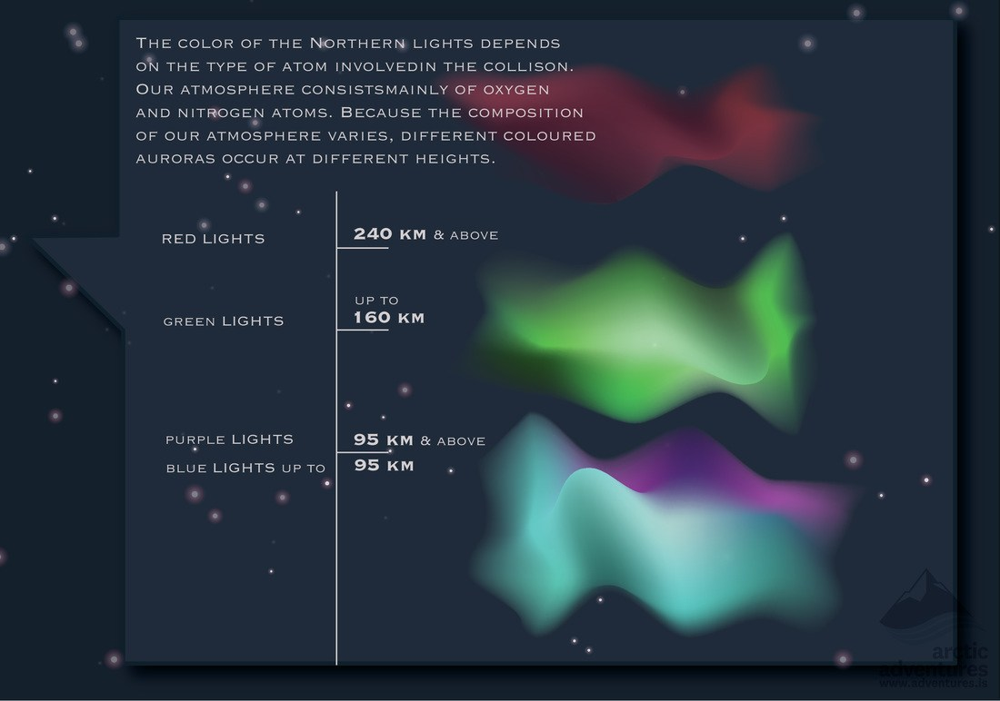
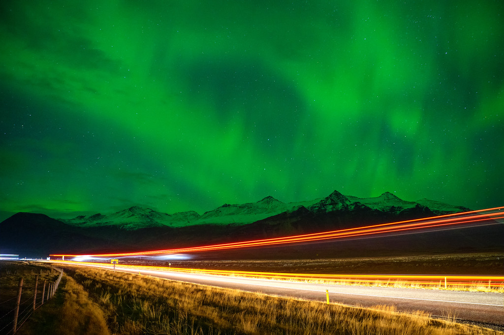
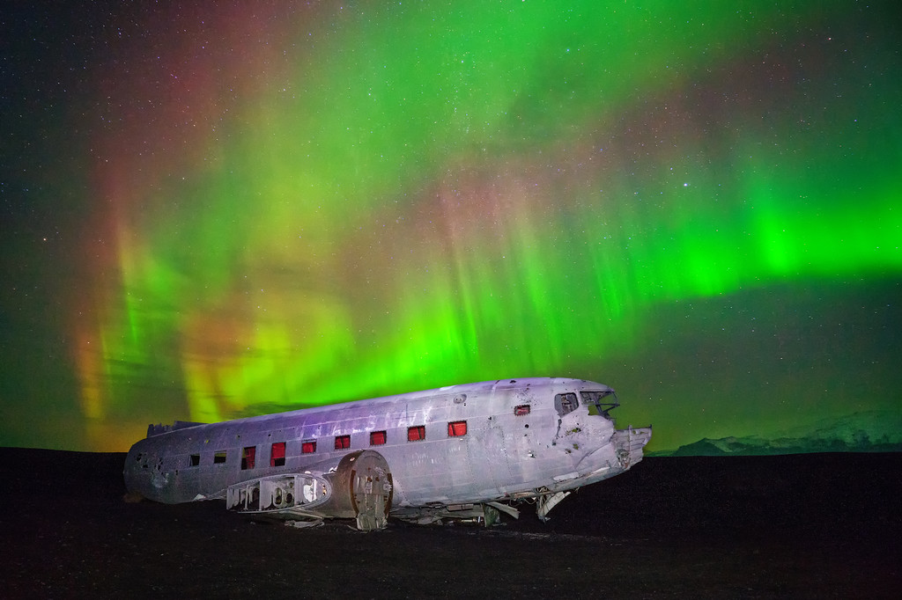

Watching Northern Light in Iceland
What are the Northern Lights?
First, a little lesson on what makes the Northern lights. Because, science.
It all starts with the sun. The sun releases solar flares which travel towards the Earth in the form of electrons. The earth has a geomagnetic field that acts like a shield to protect the Earth. The flare wraps around the Earth’s atmosphere and then separates at the poles. This is why you can only see the lights from the extreme hemispheres. (Fun fact! There is also a Southern Lights known as Aurora Australis – commonly seen from Antartica, Australia and New Zealand.)
Three rules to view the Northern Lights
Rule #1
Avoid as much light pollution as possible. This means getting out of Reykjavik! Or any city you are in. The darker the area around you, the better. If you are in Reykjavik and don’t have a car to drive away from the city, grótta lighthouse is a good place to go to minimize light.
Rule #2
Cloud cover is the most important factor. The sun could be throwing huge flares for days, but if the clouds are heavy in the sky, forget about it. Make sure to check the cloud cover forecast for the evening.
Rule #3
Best time of the year to see the Northern Lights is between August-April, with the most intense colors in October and April. The tourist season in Iceland runs from May-August, and those are also the months with the most daylight! Therefore, visiting Iceland in winter definitely has it’s advantages!